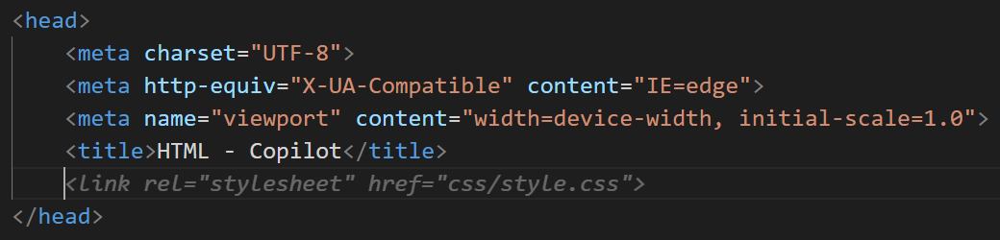
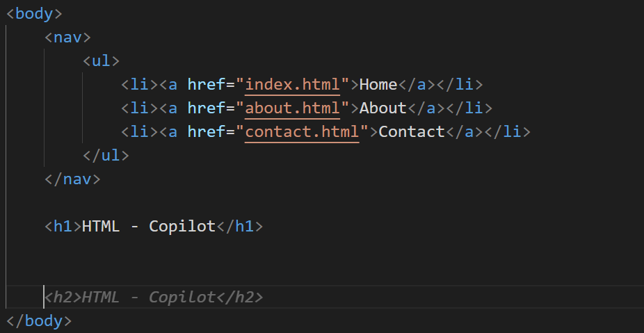

Probando github-copilot
Github copilot es la herramienta de autocompletado con inteligencia artificial que más expectativa ha creado en los últimos meses, ya que al estar hecha con la tecnología de GPT-3 para su autocompletado, se espera que se parezca mucho a un humano. Hace unos días me dieron acceso a esta herramienta, por eso, voy a hacer unas pruebas de código en varios lenguajes. Todo el código se encuentra en este repositorio de github
HTML y CSS
Hice una plantilla básica de html y una carpeta con una hoja de estilo, lo primero que me sugiere es enlazar el css, hacer una navegación y con darle enter me sugiere agregar un título y subtítulo en un h1 y un h2, pero sin una clase de css
 Si sigo con enter, me termina sugiriendo varios hola mundo en php, por lo que pondré comentarios

Agregando comentarios parece que mejora, pero en realidad no hay un mayor cambio. Comenté que era una landing page de un sitio de noticias y me sugirió un div con un h3, pero esta vez sí sugirió clases de css y a medida que le daba enter, me sugería un ítem en un h4, pero con las clases de css bastante lógicas

Como última prueba, puse un comentario de que tenía una sección de noticias deportivas y me sugirió lo mismo que en la sección de arriba, pero con los nombres de deportes, entonces agregue otro comentario diciendo que tenía una imagen de deportes y me sugirió lo mismo pero con otros nombres

Para los estilos tenía que escribir la clase y me sugería un formato para cada clase, lo bueno era que seguía un formato uniforme para todo el proyecto, pero sin nada especial